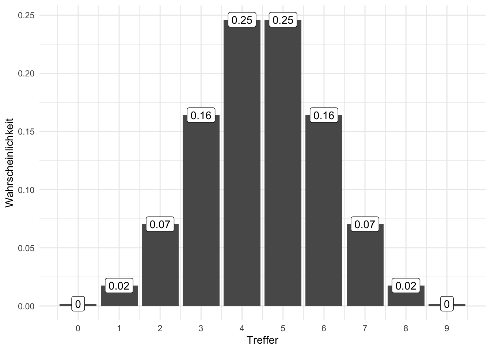

5 Globusversuch

5.1 Lernsteuerung
5.1.1 Position im Modulverlauf
Abbildung 1.1 gibt einen Überblick zum aktuellen Standort im Modulverlauf.
5.1.2 Überblick
In diesem Kapitel übersetzen wir eine Problemstellung (Forschungsfrage) in ein (mathematisches) Modell, das uns dann mit Hilfe der Bayes-Formel Antworten auf die Problemstellung gibt.
5.1.3 Lernziele
Nach Absolvieren des jeweiligen Kapitels sollen folgende Lernziele erreicht sein.
Sie können …
- Unterschiede zwischen Modellen und der Realität erläutern
- die Binomialverteilung heranziehen, um geeignete (einfache) Modelle zu erstellen (für binomial verteilte Zufallsvariablen)
- die weite Einsetzbarkeit anhand mehrerer Beispiele exemplifizieren
- Post-Wahrscheinlichkeiten anhand der Gittermethode berechnen
5.1.4 Vorbereitung im Eigenstudium
5.1.5 Benötigte R-Pakete
5.1.6 Begleitvideos
5.2 Von Welten und Golems
5.2.1 Kleine Welt, große Welt
Bekanntlich segelte Kolumbus 1492 los, und entdeckte Amerika1. Das war aber ein glücklicher Zufall, denn auf seinem Globus existierte Amerika gar nicht. Vielleicht sah sein Globus so aus wie der von Behaim, s. Abb Abbildung 5.1.

Quelle: Ernst Ravenstein, Wikimedia, Public Domain
{kind=link}
Die kleine Welt des Modells entsprach hier nicht der großen Welt, der echten Erdkugel.
Das ist ein Beispiel, das zeigt, wie Modellieren schiefgehen kann. Es ist aber auch ein Beispiel für, sagen wir, die Komplexität wissenschaftlicher (und sonstiger) Erkenntnis. Einfach gesagt: Glück gehört halt auch dazu.
Behaims Globus ist nicht gleich der Erde. Die kleine Welt von Behaims Globus ist nicht die große Welt, ist nicht die Erde.
Was in der kleinen Welt funktioniert, muss nicht in der großen Welt funktionieren. Modelle zeigen immer nur die kleine Welt: Vorsicht vor schnellen Schlüssen und vermeintlicher Gewissheit.
🏋 Nennen Sie ein Beispiel, in dem ein Modell nicht (exakt) der Wirklichkeit entspricht! \(\square\)
5.2.2 Der Golem von Prag

Der Golem von Prag, die Legende einer vom Menschen geschaffene Kreatur mit gewaltiger Kraft, die Befehle wörtlich ausführt, s. Abbildung 5.2. Die Geschichte besagt, dass ein Rabbi mit Zauberkräften den Golem aus Lehm erschuf, um die jüdische Bevölkerung der Stadt zu schätzen. Bei kluger Führung kann ein Golem Nützliches vollbringen. Bei unüberlegter Verwendung wird er jedoch großen Schaden anrichten.
5.2.3 Wissenschaftliche Modelle sind wie Golems
Golem
Eigenschaften des Golems:
- Besteht aus Lehm
- Belebt durch “Wahrheit”
- Mächtig
- dumm
- Führt Befehle wörtlich aus
- Missbrauch leicht möglich
- Märchen
Modell
Eigenschaften eines Modells:
- Besteht aus
LehmSilikon - Belebt durch Wahrheit (?)
- Manchmal mächtig
- simpler als die Realität
- Führt Befehle wörtlich aus
- Missbrauch leicht möglich
- Nicht einmal falsch
Wir bauen Golems.
Abbildung 2.4 stellt ein Sinnbild von Modellen dar.
Vergleichen wir die kleine Welt unserer Modellen (Tabelle 5.1), wie z.B. Behaims Globus, mit der Großen Welt, die Kolumbus und wir befahren.
| Kleine Welt | Große Welt |
|---|---|
| Die Welt, wie sie der Golem sieht | Die Welt, wie sie in Wirklichkeit ist |
| ist das Modell, aber nicht (zwangsläufig) die Wirklichkeit | entspricht nicht (zwangsläufig) dem Modell |
| Verwenden wir beim Modellieren | Ist das, was wir modellieren |
5.2.4 Die Bayes-Formel und Lernen
🏋 Bayes-Inferenz ähnelt dem Lernen von Menschen. Geben Sie ein Beispiel von Lernen bei Menschen, das oben dargestelltem Prozess ähnelt!\(\square\)
5.3 Ein erster Versuch: Wir werfen den Globus
5.3.1 Welcher Anteil der Erdoberfläche ist mit Wasser bedeckt?
Beispiel 5.1 (Wasseranteil auf der Erdoberfläche) Unsere Forschungsfrage lautet, mit welchem Anteil die Erde wohl mit Wasser bedeckt ist (Abbildung 5.3)? Um möglichst wenig schreiben zu müssen, schreiben wir für “angenommener Wasseranteil auf der Erdoberfläche” kurz \(p\) (wie proportion, Anteil). \(\square\)

Quelle CC 4.0 BY-NC
Analog können wir uns vorstellen, 11 Wissenschaftlis haben jeweils eine andere Hypothese zum Wasseranteil, \(\pi\), der Erde. Die erste Person hat die Hypothese \(\pi_1 = 0\), die zweite Person geht von \(\pi_2 = 0.1\) aus … die 11. Person von \(\pi_{11} = 1\).
Um die Forschungsfage zu beantworten, werfen Sie einen Globus-Ball in die Luft und fangen in wieder auf. Sie notieren dann, ob die Stelle unter Ihrem Zeigefinger Wasser zeigt (W) oder Land (L). Den Versuch wiederholen Sie, bis Sie den Globusball insgesamt 9 Mal geworfen haben.2
So sah mein3 Ergebnis aus:
\[W \quad L \quad W \quad W \quad W \quad L \quad W \quad L \quad W\]
Also \(W=6\) und \(L=3\).
Übungsaufgabe 5.1 🏋️️ Besorgen Sie sich einen Globus (zur Not eine Münze) und stellen Sie den Versuch nach!\(\square\)
5.3.2 Wie entstanden die Daten?
Der physikalische Prozess, der zur Entstehung der Daten führt, nennt man den datengenierenden Prozess.
In diesem Fall kann man ihn so beschreiben:
- Der wahre Anteil von Wasser, \(W\), der Erdoberfläche ist \(\pi\) (und \(1-\pi\) ist der Anteil Land, \(L\)).
- Ein Wurf des Globusballs hat die Wahrscheinlichkeit \(\pi\), eine \(W\)-Beobachtung zu erzeugen.
- Die Würfe des Globusballs sind unabhängig voneinander.
- Wir haben kein Vorwissen über \(\pi\); jeder Wert ist uns gleich wahrscheinlich.
Übungsaufgabe 5.2 🏋 Welche Annahmen würden Sie ändern? Welche könnte man wegnehmen? Welche hinzufügen? Was wären die Konsequenzen?\(\square\)
5.3.3 Ein paar Fachbegriffe
Definition 5.1 (Priori-Verteilung) Für jede Hypothese haben wir ein Vorab-Wissen, das die jeweilige Plausibilität der Hypothese angibt: Priori-Verteilung.\(\square\)
Definition 5.2 (Likelihood) Für jede Hypothese (d.h. jeden Parameterwert \(\pi\)) möchten wir wissen, wie wahrscheinlich die Daten sind (unter der Annahme, dass die Hypothese richtig ist). Kurz: Wir suchen die Likelihood. Anders gesagt: Die Likelihood sagt uns, wie gut die Daten zu einer bestimmten Hypothese passen.\(\square\)
Definition 5.3 (Posteriori-Verteilung) Dann gewichten wir den Likelihood mit dem Vorabwissen, so dass wir die Posteriori-Verteilung4 bekommen.\(\square\)
5.3.4 Bayes-Updates
Der Golem denkt eigentlich ganz vernünftig: Zuerst hat er ein Vorwissen zum Wasseranteil, die dazugehörige Wahrscheinlichkeitsverteilung nennt man Priori-Verteilung. In unserem Beispiel ist das Vorwissen recht bescheiden: Jeder Wasseranteil ist ihm gleich plausibel. Als nächstes beschaut sich der Golem die Daten und überlegt, wie wahrscheinlich die Daten sind, wenn man von einer bestimmten Hypothese ausgeht, z.B. dass der Wasseranteil 10% beträgt. Die zugehörige Wahrscheinlichkeit der Daten unter Annahme einer Hypothese nennt man die5 Likelihood. Als letztes bildet sich der Golem eine abschließende Meinung zur Wahrscheinlichkeit jeder Hypothese. Diese Wahrscheinlichkeitsverteilung nennt man Posteriori-Verteilung. Sie berechnet als Gewichtung des Vorwissen mit den neuen Daten. Anders gesagt: Das Vorwissen wird anhand der Erkenntnisse (der Daten) aktualisiert oder “geupdatet”, s. Abbildung 5.4.
graph LR A[Priori-Vert.]-->B[Likelihood]-->C[Post-Vert.]-->A
Übungsaufgabe 5.3 (Wie gut passen die Daten zur Hypothese, dass die Erde komplett trocken ist?) Wir haben in unseren Versuch \(W=6\) und \(L=3\) erzielt. Diese Daten passen überhaupt nicht zur Hypothese, dass die Erdoberfläche komplett trocken ist. Die Likelihood, \(L\) für \(\pi=0\) ist also Null. Analog ist die Likelihood für \(\pi=1\) auch Null.\(\square\)
5.3.5 Wie wahrscheinlich ist ein Wasseranteil von 90%?
Wie wahrscheinlich ist es, einen bestimmten Wasseranteil, z.B. 6 Treffer (bei 9 Würfen) zu erhalten, wenn man eine bestimmte Hypothese (einen bestimmten Wasseranteil, z.B. 90%) annimmt? Diese Wahrscheinlichkeit nennt man die Likelihood, \(L\) oder \(L\).
Wenn wir eine Binomialverteilung annehmen, dann gehen wir davon aus, dass die Daten unabhängig voneinander entstehen und sich der Parameterwert nicht zwischenzeitlich ändert6. Der Wasseranteil der Erde bleibt während des Versuchs gleich (durchaus plausibel).
Lassen Sie uns im Folgenden die Wahrscheinlichkeit (\(Pr\)), \(W\) mal Wasser und \(L\) mal Land zu beobachten, wenn die Wahrscheinlichkeit für Wasser \(\pi\) beträgt, so bezeichnen: \((Pr(W,L | \pi))\). Diese Wahrscheinlichkeit, \((Pr(W,L | \pi))\), kann man mit der Binomialverteilung berechnen.
Möchte man die Wahrscheinlichkeit ansprechen für das Ereignis “5 mal Wasser und 2 mal Land, wenn wir von einem Wasseranteil von 70% ausgehen”, so würden wir kurz schreiben: \(Pr(W=5, L=2 | \pi=.7)\). Oder noch kürzer: \(Pr(W=5 | \pi=.7)\), denn bei 7 Würfen, von denen 5 \(W\) gezeigt haben, ist die Anzahl von \(L\) festgelegt.
Die Binomialverteilung zeigt die Verteilung der Häufigkeit (Wahrscheinlichkeit) der Ereignisse (z.B. 2 Mal Kopf) beim wiederholten Münzwurf (und allen vergleichbaren Zufallsexperimenten): “Münzwurfverteilung”, s. Kap. Kapitel 4.3.2.
5.3.6 Binomialverteilung mit R
Praktischerweise ist die Binomialverteilung in R eingebaut, wie wir gleich sehen werden.
Was ist der Anteil der gültigen Pfade in einem Baumdiagramm (Wahrscheinlichkeit), um 2 mal \(W\) bei \(N=W+L=3\) Würfen zu bekommen, wenn wir von \(\pi=1/2\) ausgehen?7.
dbinom(x = 2, size = 3, prob = 1/2)
## [1] 0.375Von den 8 Endkonten bzw. Pfaden sind 3 günstig. Demnach ist die Wahrscheinlichkeit des gesuchten Ereignis (2 Treffer bei 3 Würfen, binomialverteilt) gleich 3 von 8 (alle Pfade sind gleich wahrscheinlich); 3/8 sind 0.375.
flowchart TD A[A - Start] -. 1/2 .-> B[B - 0] A -. 1/2 .-> C[C - 1] B -. 1/2 .-> D[D - 0] B -. 1/2 .-> E[E - 1] C -. 1/2 .-> F[F - 0] C -. 1/2 .-> G[G - 1] D -. 1/2 .-> H[H - 0] D -. 1/2 .-> J[I - 1] E -. 1/2 .-> K[K - 0] E -. 1/2 .-> L[L - 1] F -. 1/2 .-> M[M - 0] F -. 1/2 .-> N[N - 1] G -. 1/2 .-> O[O - 0] G -. 1/2 .-> P[P - 1]
Abb. Abbildung 5.5 stellt einen einfachen Baum für 3 Globuswürfe mit je zwei möglichen Ereignissen (W vs. L) dar. In der ersten (obersten) Zeile (Knoten A; “Start”) ist Ausgangspunkt dargestellt: Der Globus ruht wurfbereit in unserer Hand. Jetzt Achtung: Sie werfen den Globusball hoch. Die Pfeile zeigen zu den (zwei) mögliche Ergebnissen. Die zweite Zeile (Knoten B und C) stellt die beiden Ergebnisse des Wurfes dar. Die Ergebnisse sind hier mit 0 und 1 bezeichnet (das eine eine einfache und weiteinsetzbare Notation). Die dritte Zeile (Knoten D bis G) stellt die Ergebnisse des des zweiten Wurfes dar. Die vierte Zeile (Knoten H bis P) stellt die Ergebnisse des des dritten Wurfes dar.
Für mehr Würfe würde das Diagramm irgendwann unübersichtlich werden.
Was ist der Anteil der gültigen Pfade in einem Baumdiagramm (Wahrscheinlichkeit), um 6 mal \(W\) bei \(N=W+L=9\) Würfen zu bekommen, wenn wir von \(p=1/2\) ausgehen?
dbinom(x = 6, size = 9, prob = 1/2)
## [1] 0.1640625Abbildung 5.6 zeigt die Binomialverteilung \(X \sim Bin(9, 1/2)\).

Abb Abbildung 5.7 ist ein vergeblicher Versuch, so einen großen Baum (\(n=9\)) darzustellen.
Visualisierungen wie Baumdiagramme sind eine praktische Hilfe zum Verständnis, kommen aber bei größeren Daten schnell an ihre Grenze.

Jetzt folgen einige Beispiele.
Beispiel 5.2 (Globus mit 9 Treffern bei 9 Würfen) Was ist die Wahrscheinlichkeit für \(W=9\) bei \(N=9\) und \(p=1/2\)?
dbinom(x = 9, size = 9, prob = 1/2)
## [1] 0.001953125Das ist 1 günstiger Pfad von 512 Pfaden.
dbinom gibt uns die Wahrscheinlichkeit von x Treffern, bei size Versuchen zurück, wobei eine Binomialverteilung angenommen wird mit Trefferwahrscheinlichkeit prob.
5.3.7 Unser Modell ist geboren
Wir fassen das Globusmodell so zusammen, s. Gleichung 5.1.
\[W \sim \text{Bin}(N,\pi) \tag{5.1}\]
Lies: “W ist binomial verteilt mit den Parametern \(N\) und \(\pi\)”. \(N\) gibt die Anzahl der Globuswürfe an: \(N=W+L\).
Unser Vorab-Wissen zu \(p\) sei, dass uns alle Werte gleich plausibel erscheinen (“uniform”):
\[\pi \sim \text{Unif}(0,1).\]
Lies: “\(\pi\) ist gleich (uniform) verteilt mit der Untergrenze 0 und der Obergrenze 1”.
Man könnte auch sagen: Wir haben praktisch kein Vorwissen, wir sind erstmal (aprior) indifferent, jeder Parameterwert erscheint uns erstmal gleich wahrscheinlich.
5.4 Das Globus-Modell als Bayes’ Theorem
5.4.1 Von gemeinsamer zur bedingen Wahrscheinlichkeit
Erinnerung wir uns (Beispiel 3.22): Die Wahrscheinlichkeit für Regen und kalt ist gleich der Wahrscheinlichkeit von Regen, gegeben kalt mal der Wahrscheinlichkeit von kalt; das ist die Kettenregel (Definition 3.17).
Entsprechend gilt:
Die gemeinsame Wahrscheinlichkeit für die beiden Ereignisse \(W\) (z.B. 6 Mal Wasser zu erhalten bei 9 Versuchen) und \(A\) (z.B. dass der Wasseranteil der Erdoberfläche 70% beträgt) lässt sich ebenso mit der Kettenregel der Wahrscheinlichkeitsrechnung bestimmen:
\[Pr(W,A) = Pr(W|A) \cdot Pr(A)\]
Laut der Kettenregel ist “Drehen” erlaubt:
\[Pr(A,W) = Pr(A|W) \cdot Pr(W)\]
Wir setzen die letzten beiden Gleichungen gleich:
\[Pr(W|p) \cdot Pr(A) = Pr(A|W) \cdot (W)\]
Und dann lösen wir auf nach der Posteriori-Wahrscheinlichkeit8, \(Pr(A|W)\), voilà! Wir haben Bayes’ Theorem genutzt, um die gesuchte Größe, \(Pr(A|W)\), zu bestimmen, s. ?eq-globusbayes.
\[Pr(A|W) = \frac{Pr(W|A) \times Pr(A)}{Pr(W)}\]{#globus-bayes}
\(Pr(W)\) nennt die Evidenz. Die Evidenz berechnet sich als Mittelwert der Likelihoods über alle Werte von \(W\), vgl. Definition 3.18:
\(Pr(W) = Pr(W|A) \times Pr(A) + Pr(\neg W| \neg A) \times Pr(\neg A)\)
Die Aufgabe der Evidenz ist nur dafür zu sorgen, dass der Bruch insgesamt nur Werte zwischen 0 und 1 annehmen kann.
5.4.2 Bayes’ Theorem als Formel
Gesucht ist die Wahrscheinlichkeit einer Hypothese gegeben einer bestimmten Datenlage, \(Pr(H|D)\):
\[Pr(H|D) = \frac{Pr(D|H) Pr(H)}{Pr(D)} = \frac{\text{Likelihood} \cdot \text{Priori}}{\text{Evidenz}}\]
Schauen wir uns die Bestandteile von Bayes’ Theorem noch etwas näher an:
Posteriori-Wahrscheinlichkeit: \(Pr_{Post} := Pr(H|D)\)
Likelihood: \(L := Pr(D|H)\)
Priori-Wahrscheinlichkeit: \(Pr_{Priori} := Pr(H)\)
Evidenz: \(E := Pr(D)\)
Bayes’ Theorem gibt die \(Pr_{Post}\) an, wenn man die Gleichung mit der \(Pr_{Priori}\) und dem \(L\) füttert.
Bayes’ Theorem wird verwendet, um die \(Pr_{Post}\) zu quantifizieren.
Die \(Pr_{Post}\) ist proportional zu \(L \times Pr_{Priori}\).
5.4.3 Posteriori als Produkt von Priori und Likelihood
Die unstandardisierte Post-Wahrscheinlichkeit \(Pr_{\text{unPost}}\) ist einfach das Produkt von Likelihood und Priori, s. Gleichung 5.2.
\[Pr_{\text{unPost}} = L \times \text{Priori} \tag{5.2}\]
Das Standardisieren dient wie gesagt nur dazu, einen Wert zwischen 0 und 1 zu erhalten. Dies erreichen wir, indem wir durch die Summe aller Post-Wahrscheinlichkeiten dividieren. Die Summe der Post-Wahrscheinlichkeiten bezeichnet man (auch) als Evidenz, vgl. Gleichung Gleichung 5.3.
\[\text{Posteriori} = \frac{\text{Likelihood} \times \text{Priori}}{\text{Evidenz}} \tag{5.3}\]
Abb. Abbildung 5.8 visualisiert, dass die Post-Verteilung eine Gewichtung von Priori und Likelihood ist. Mathematisch gesprochen beruht diese Gewichtung auf einer einfachen Multiplikationen der beiden genannten Terme.

5.4.4 Wissen updaten: Wir füttern Daten in das Modell
Golems können lernen?! Abbildung 5.9 zeigt die Post-Verteilung, nach \(n=1, 2, ...,n=9\) Datenpunkten, d.h. Würfen mit dem Globusball. Man sieht: Am Anfang, apriori, also bevor die Daten haben, vor dem ersten Wurf also, ist jeder Parameterwert gleich wahrscheinlich für den Golem (das Modell). Je nach Ergebnis des Wurfes verändert sich die Wahrscheinlichkeit der Parameterwerte, kurz gesagt, die Post-Verteilung verändert sich in Abhängigkeit von den Daten.

Insofern kann man sagen: Unser Golem (das Modell) lernt. Ob das Modell nützlich ist (präzise Vorhersagen liefert), steht auf einem anderen Blatt.
5.5 Bayes berechnen mit mit dem Bayes-Gitter
Wir erstellen uns eine kleine Tabelle, die man “Bayes-Gitter” nennen könnte. Dazu gehen wir so vor:
5.5.1 Idee
- Teile den Wertebereich des Parameter in ein “Gitter” auf, z.B. \(0.1, 0.2, ..., 0.9, 1\).
- Wähle den Priori-Wert des Parameters für jeden Gitterwert, z.B. 1/10 bei einer Gleichverteilung von 0 bis 1.
- Berechne den Likelihood für jeden Parameterwert.
- Berechne den unstandardisierten Posteriori-Wert für jeden Parameterwert (Produkt von Priori und Likelihood).
- Standardisiere den Posteriori-Wert durch teilen anhand der Summe alle unstand. Posteriori-Werte.
Für jeden Parameterwert berechnen wir eine (Post-)Wahrscheinlichkeit.9 Häufig entspricht eine Hypothese einem Parameterwert, etwa wenn man sagt: “Ich glaube, die Münze ist fair”, was auf einem Parameterwert von 50% herausläuft. Dazu geben wir an, für wie wahrscheinlich wie apriori10 - also bevor wir irgendwelche Daten erheben - jeden einzelnen Gitterwert halten. Wir machen es uns hier einfach und halten jeden Gitterwert für gleich wahrscheinlich. Tatsächlich ist der konkrete Wert hier egal, entscheidend ist das Verhältnis der Apriori-Werte zueinander: Geben wir einigen Gitterwerten den Wert 2, aber anderen den Wert 1, so halten wir Erstere für (apriori) doppelt so plausibel wie Letztere. Der Likelihood wird in diesem Fall mit der Binomialverteilung berechnet. Der Likelihood gibt an, wie wahrscheinlich ein Gitterwert ist gegeben einem bestimmten apriori gewählten Parameterwert. Die “End-Wahrscheinlichkeit”, die unstandardisierte Post-Wahrscheinlichkeit, die “hinten rauskommt” ist das Produkt von Priori-Wert und Likelihood. Anschaulich gesprochen: Die Priori-Werte werden mit den Likelihoodwerten gewichtet11. Da wir letztlich eine Wahrscheinlichkeitverteilung bekommen möchten, teilen wir jeden Posteriori-Wert durch die Summe aller Posteriori-Werte. Dadurch ist gerantiert, dass sich die Posteriori-Werte zu eins aufaddieren. Damit haben wir dann die Ansprüche an eine Wahrscheinlichkeitsverteilung erfüllt (vgl. (seq-kolmogorov?)).
5.5.2 Bayes-Gitter in R berechnen
Legen wir uns eine Tabelle mit Gitterwerten an, um deren Posteriori-Wahrscheinlichkeit zu berechnen.
Ein paar Vorarbeiten. Zuerst wählen wir unsere Parameterwerte; sagen wir 0, 0.1, 0.2, … , 1:
p_Gitter <- seq(from = 0, to = 1, by = 0.1)
p_Gitter
## [1] 0.0 0.1 0.2 0.3 0.4 0.5 0.6 0.7 0.8 0.9 1.0Dann berechnen wir schon mal die Wahrscheinlichkeit der Daten (6 W bei 9 Würfen) gegeben jeweils eines Gitterwerts:
Likelihood <- dbinom(6, size = 9, prob = p_Gitter)
Likelihood
## [1] 0.000000000 0.000061236 0.002752512 0.021003948 0.074317824 0.164062500
## [7] 0.250822656 0.266827932 0.176160768 0.044641044 0.000000000Dann packen wir das alles in eine Tabelle, s. Tabelle 5.2.
d <-
tibble(
# definiere die Hypothesen (das "Gitter"):
p_Gitter = p_Gitter,
# bestimme den Priori-Wert:
Priori = .1) %>%
mutate(
# berechne Likelihood für jeden Gitterwert:
Likelihood = Likelihood,
# berechne unstand. Posteriori-Werte:
unstd_Post = Likelihood * Priori,
# berechne Evidenz, d.i. die Summe aller unstand. Post-Werte:
Evidenz = sum(unstd_Post),
# berechne stand. Posteriori-Werte (summiert zu 1):
Post = unstd_Post / Evidenz) Das “Bayes-Gitter” (Tabelle 5.2) zeigt, wie sich die Post-Verteilung berechnet.
| id | p_Gitter | Priori | Likelihood | unstd_Post | Post |
|---|---|---|---|---|---|
| 1 | 0.0 | 1 | 0.00 | 0.00 | 0.00 |
| 2 | 0.1 | 1 | 0.00 | 0.00 | 0.00 |
| 3 | 0.2 | 1 | 0.00 | 0.00 | 0.00 |
| 4 | 0.3 | 1 | 0.02 | 0.02 | 0.02 |
| 5 | 0.4 | 1 | 0.07 | 0.07 | 0.07 |
| 6 | 0.5 | 1 | 0.16 | 0.16 | 0.16 |
| 7 | 0.6 | 1 | 0.25 | 0.25 | 0.25 |
| 8 | 0.7 | 1 | 0.27 | 0.27 | 0.27 |
| 9 | 0.8 | 1 | 0.18 | 0.18 | 0.18 |
| 10 | 0.9 | 1 | 0.04 | 0.04 | 0.04 |
| 11 | 1.0 | 1 | 0.00 | 0.00 | 0.00 |
Für jede Hypothese (Spalte id) berechnen wir die unstandardisierte Posteriori-Wahrscheinlichkeit als Produkt von Priori und Likelihood:
\(\text{Post}_{\text{unstand}} = \text{Priori} \cdot \text{Likelihood}\)
Um zur standardisierten Posteriori-Wahrscheinlichkeit zu gelangten, teilen wir in jeder Zeile der Gitterbox (also für jede Hypothese) die unstandardisierte Post-Wahrscheinlichkeit durch die Summe der unstandardisierten Post-Wahrscheinlichkeiten.
Wenn der Priori-Wert für jeden Gitterwert gleich ist, dann ist der Likelihood gleich der unstandardisierten Post-Wahrscheinlichkeit.\(\square\)
🏋️ Was wohl mit Post passiert, wenn wir Priori ändern?\(\square\)
Abbildung 6.1 zeigt eine Visualisierung der Post-Verteilung mit Hilfe der Funktion ggline() aus dem Paket ggpubr.
5.5.3 Was sagt die Post?
Die Posteriori-Verteilung (Kurz: “Post-Verteilung”), \(Pr_{Post}\), zeigt, wie plausibel wir jeden Wert von \(p\) halten, jetzt, nachdem wir die Daten des Versuchs kennen.
Abbildung 5.10 zeigt die Post-Wahrscheinlichkeit für 5, 10 und 20 Parameterwerte. Das mittlere Teilbild (10 Gitterwerte) entspricht unserer Tabelle oben.

Unter sonst gleichen Umständen gilt:
- Mehr Gitterwerte glätten die Annäherung.
- Je größer die Stichprobe (\(N\)), desto zuverlässiger wird unsere Berechnung.
Die Post-Verteilung ist sowas wie das Ziel all Ihrer Träume (falls Sie es noch nicht gewusst haben): Aus der Post-Verteilung können Sie ablesen, wie wahrscheinlich Ihre Hypothese (Ihr Lieblings-Parameterwert) ist. Und noch einiges mehr, aber das ist Thema des nächsten Kapitels.
5.6 Abschluss
5.6.1 Zusammenfassung
In unserem Modell haben wir Annahmen zu \(Pr_{Priori}\) und \(L\) getroffen.
Auf dieser Basis hat der Golem sein Wissen geupdated zu \(Pr_{Post}\).
Mit der Gitter-Methode haben wir viele Hypothesen (Parameterwerte) untersucht und jeweils die \(Pr_{Post}\) berechnet.
Unser Modell bildet die kleine Welt ab; ob es in der großen Welt nützlich ist, steht auf einem anderen Blatt.
🏋️ Wenn Sie auf einen Prozentwert für \(W\) tippen müssten, welchen würden Sie nehmen, laut dem Modell (und gegeben der Daten)?
5.6.2 Der Globusversuch als Modell für zweiwertige Zufallsversuche
Der Globusversuch ist kein prototypisches Beispiel für Statistik in der Praxis, zumindest nicht auf dem ersten Blick. Er hat aber aber den Vorteil, dass es ein einfaches, gut greifbares Beispiel ist, und damit zum Lernen gut geeignet ist. Bei näherer Betrachtung ist der Globusversuch prototypisch für ganz viele Fragestellungen:
- Von einem neuen Produkt von von \(n\) Exemplaren \(k\) verkauft. Auf welchen Wert \(p\) kann die Akzeptanzrate dieses Produkts geschätzt werden?
- Ein Chat-Bot hat von \(n\) Fragen \(k\) richtig beantwortet. Wie hoch kann die Verständnisrate \(p\) dieses Programms geschätzt werden?
- Eine neue Krebstherapie hat von \(n\) “austherapierten” Patientis \(k\) geheilt. Auf wie hoch kann die Erfolgsrate dieser Therapie geschätzt werden?
Kurz: Der Globusversuch ist ein Muster für zweiwertige Zufallsversuche. Und solche sind häufig im Leben, im Business und in der Wissenschaft.
5.6.3 Vertiefung
Das “Bayes-Paradox-Video” von 3b1b präsentiert eine gut verständliche Darstellung des Bayes-Theorem aus einer zwar nicht gleichen, aber ähnlichen Darstellung wie in diesem Kapitel.
McElreath (2020), Kap. 2, stellt das Globusmodell mit mehr Erläuterung und etwas mehr theoretischem Hintergrund vor.
5.7 Aufgaben
Alle Aufgaben mit dem Tag rethink-chap2.
5.8 —

wenn auch nicht als Erster↩︎
Warum gerade 9 Mal? Tja, dann hat das Handy geklingelt… Auch in wissenschaftlichen Versuchen ist (leider?) nicht immer alles genau geregelt.↩︎
Ihr Ergebnis kann anders aussehen, schließlich ist es ja Zufall.↩︎
Anstatt von Priori liest man auch Prior; anstatt Posteriori auch Posterior↩︎
oder den?↩︎
Die sog. “iid-Annahme”, independently and identically distributed: Jeder Wurf der Globusballes ist eine Realisation der gleichen Zufallsvariablen. Jeder Wurf ist unabhängig von allen anderen: Das Ergebnis eines Wurfes hat keinen (stochastischen) Einfluss auf ein Ergebnis anderer Würfe. Die Wahrscheinlichkeitsverteilung ist bei jedem Wurf identisch.↩︎
Allgemeiner spricht man auch von 2 Treffern bei 3 Würfen (d.h. 1 “Nicht-Treffer”, den wir als “Niete” bezeichnen). Treffer werden oft mit
1und Nieten mit0bezeichnet↩︎kürzen wir mit Post-Wahrscheinlichkeit or \(Pr(Post)\) ab↩︎
Ein Parameterwert ist eine mögliche Ausprägung des Parameters.↩︎
synonym: priori↩︎
synonym: Die Likelihoodwerte werden mit den Apriori-Werten gewichtet.↩︎